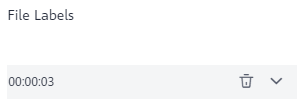
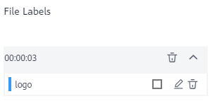

Model training requires a large amount of labeled video data. Therefore, before the model training, label the unlabeled video files. ModelArts enables you to label video files. In addition, you can modify the labels of video files, or remove their labels and label the video files again.
Starting Labeling
- Log in to the ModelArts management console. In the left navigation pane, choose Data Management > Datasets. The Datasets page is displayed.
- In the dataset list, select the dataset to be labeled based on the labeling type, and click the dataset name to go to the Dashboard tab page of the dataset.
By default, the Dashboard tab page of the current dataset version is displayed. If you need to label the dataset of another version, click the Versions tab and then click Set to Current Version in the right pane. For details, see Managing Dataset Versions.
- On the Dashboard page of the dataset, click Label in the upper right corner. The dataset details page is displayed. By default, all data of the dataset is displayed on the dataset details page.
Synchronizing Data Sources
ModelArts automatically synchronizes data and labeling information from Input Dataset Path to the dataset details page.
To quickly obtain the latest data in the OBS bucket, click Synchronize Data Source on the Unlabeled tab page of the dataset details page to add the data uploaded using OBS to the dataset.
Labeling Video Files
On the dataset details page, both unlabeled and labeled video files in the dataset are displayed.
- On the Unlabeled tab page, click the target video file in the video list on the left. The labeling page is displayed.
- Play the video. When the video is played to the time point to be labeled, click the pause button in the progress bar to pause the video to a specific image.
- In the left pane, select a bounding box. By default, a rectangular box is selected. Drag the mouse to select an object in the video image, enter a new label name in the displayed Add Label text box, select a label color, and click Add to label the object. Alternatively, select an existing label from the drop-down list and click Add to label the object. Label all objects in the image. Multiple labels can be added to an image.
The supported bounding boxes are the same as those supported by Object Detection. For details, see Table 1 in Object Detection.
- After the previous image is labeled, click the play button on the progress bar to resume the playback. Then, repeat 3 to complete labeling on the entire video.
The labeled time points of the current video are displayed on the right of the page.
Figure 1 File labels
 - Click Back to Data Labeling Preview in the upper left corner of the page. The dataset details page is displayed, and the labeled video file is displayed on the Labeled tab page.
Modifying Labeled Data
After labeling data, you can delete labeled data on the Labeled tab page.
- Click
 in the Operation column of the target number to delete the label of the video segment. Alternatively, you can click the cross (x) icon above the labeled video file to delete the label. Then click OK.
in the Operation column of the target number to delete the label of the video segment. Alternatively, you can click the cross (x) icon above the labeled video file to delete the label. Then click OK.
On the Labeled tab page, click the target video file. In the All Labels area on the right of the labeling page, click the triangle icon on the right of the time point to view details. You can modify or delete a label.
- Modifying a label: Click the edit icon on the right of a label to modify the label name.
- Deleting a label: Click the delete icon on the right of a label to delete the label. If you click the delete icon on the right of the image time, all labels on the image are deleted.

Deleting a Video File
You can quickly delete the video files you want to discard.
On the All, Unlabeled, or Labeled tab page, select the video files to be deleted or click Select Images on Current Page to select all video files on the page, and click Delete in the upper left corner to delete the video files. In the displayed dialog box, select or deselect Delete source files as required. After confirmation, click OK to delete the videos.
If a tick is displayed in the upper left corner of a video file, the video file is selected. If no video file is selected on the page, the Delete File button is unavailable.

If you select Delete source files, video files stored in the corresponding OBS directory will be deleted when you delete the selected video files. Deleting source files may affect other dataset versions or datasets using those files. As a result, the page display, training, or inference is abnormal. Deleted data cannot be recovered. Exercise caution when performing this operation.